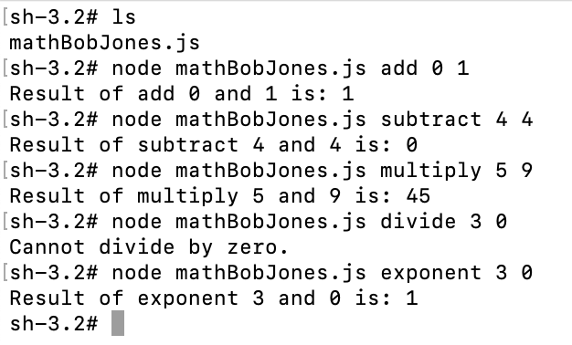

Create a Math Function
Using ChatGPT, write a simple JavaScript program that will run in Node.js and do different math operations on two values. It should support the following:
- addition
- subtraction
- multiplication
- division
- exponent
Create a file called mathYOURNAME.js (replace
YOURNAME with your first and last name) to put your code into.
EXAMPLE: If your name were Bob Jones, it should be
mathBobJones.js
Test your code by running node in the terminal or command prompt
like this node mathYOURNAME.js add 2 2 and that should
add 2 + 2.
IMPORTANT: Test each function using YOUR OWN student ID one digit at a time and take a screenshot of the results: If your student ID (BYU‑Idaho I‑number) were 014459303. YOU MUST USE THE NUMBERS FROM YOUR ID.
EXAMPLE OF SCREENSHOT TO TURN IN (but it would be your name and your ID numbers, if you run out of numbers start over):

Ask AI or ChatGPT: Can you give me some simple instructions to run and test this file?
Once you have completed the assignment, upload a copy of your
mathYOURNAME.js file and a screenshot of your
mathYOURNAME.js program code working to Canvas.
Ask AI:
What does math have to do with this student learning
outcome of this course?
Outcome: “Reflect on the power of gospel centered living and
personal integrity in your education, home, and professional
career with a focus on Jesus Christ.”
What are your thoughts to the AI response? Write at least one paragraph.
Add a comment to your submission for your paragraph about your thoughts on this topic and AI's response.